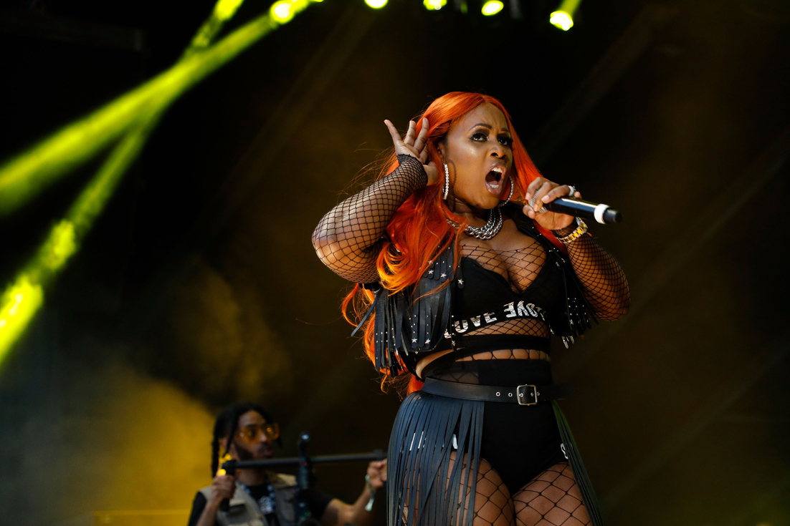

Remy Ma Defies Papoose’s Legal Warning — Performs Controversial Diss Track Anyway
Music | Hip-Hop
Published: Wednesday, August 13, 2026

The ongoing fallout between Remy Ma and Papoose has taken another turn after Remy performed one of her most talked-about songs months after Papoose’s legal team reportedly demanded that she stop distributing it.
The song at the center of the dispute is “W.Y.F.L.,” which Remy released on April 10, 2026. The record appeared to address accusations surrounding her former marriage to Papoose, including claims he had previously made about contributing to her music.
According to documents reportedly tied to the couple’s divorce proceedings, Papoose’s attorney, Shelley Albert, sent a letter to Remy’s attorney, Diane Bowman, on April 18. The letter reportedly called for Remy to stop releasing the song and remove it from places where it was available.
The timing put the reported legal warning just eight days after the song was released.
The Track and Its Targets
The track appeared to push back against comments Papoose made during an Instagram Live in 2025, when he claimed he had helped write a substantial amount of Remy’s music while they were together. Remy’s lyrics seemed to challenge those claims, accusing someone of taking credit for songwriting work they allegedly did not do.
Papoose was not reportedly named directly in the song, but several lines were interpreted as being aimed at him. Other lyrics appeared to reference boxer Claressa Shields, whose relationship with Papoose has become part of the public controversy surrounding the couple’s separation.
Reported Legal Warning
Papoose’s legal team reportedly argued that the lyrics were offensive, insulting and intended to publicly embarrass him. The reported letter also raised concerns about the couple’s ongoing divorce proceedings and discussions surrounding possible restrictions on public statements.
His attorneys reportedly warned that additional legal action could be pursued, including a potential defamation claim and requests for attorney fees.
The letter also reportedly referenced the child Papoose and Remy share, suggesting that the former couple should consider how their public conflict could affect their daughter in the future.
Brooklyn Performance
Despite the reported demand, “W.Y.F.L.” eventually made its way back onto a major stage.
On August 2, Remy performed the song at Angie Martinez’s Summer BBQ in Brooklyn. The event at Paradise Coney Island featured performances from artists including French Montana, Coi Leray, Zeddy Will and Buju Banton.
Remy included “W.Y.F.L.” in her set, giving the song another burst of attention and bringing the reported legal dispute back into the conversation.
The timeline is particularly notable because the cease-and-desist reportedly came in April, months before the Brooklyn performance. In other words, the August performance was not what initially triggered the reported legal warning.
Ongoing Public Feud
The situation is the latest development in a breakup that has played out publicly for more than a year. Tensions intensified in late 2024 after Remy accused Papoose and Shields of working against her reputation and shared alleged private communications involving the two.
Papoose subsequently spoke about the relationship and said he had been pursuing a divorce. In May 2025, he announced that he had officially filed.
Shields has also addressed the controversy, defending her relationship with Papoose during a July 30 interview. She acknowledged that the divorce had been filed but was still not finalized.
As the legal proceedings continue, Remy’s “W.Y.F.L.” has become another flashpoint in the former couple’s public feud. What began as a response to accusations about songwriting has now reportedly become part of a broader legal dispute — while Remy’s decision to perform the record months later has only fueled additional attention.
The claims and accusations made by the people involved remain disputed unless and until they are established through the legal process.
Watch
Check out the related video below: